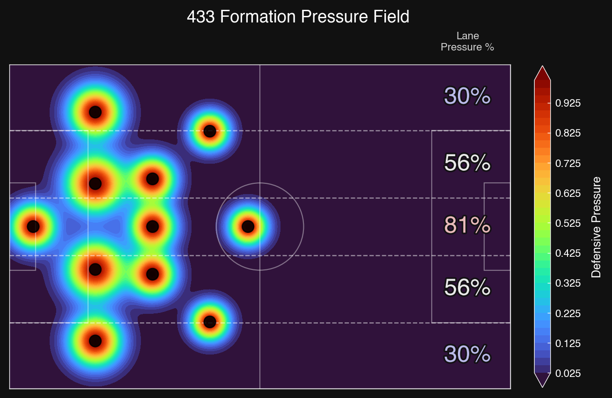
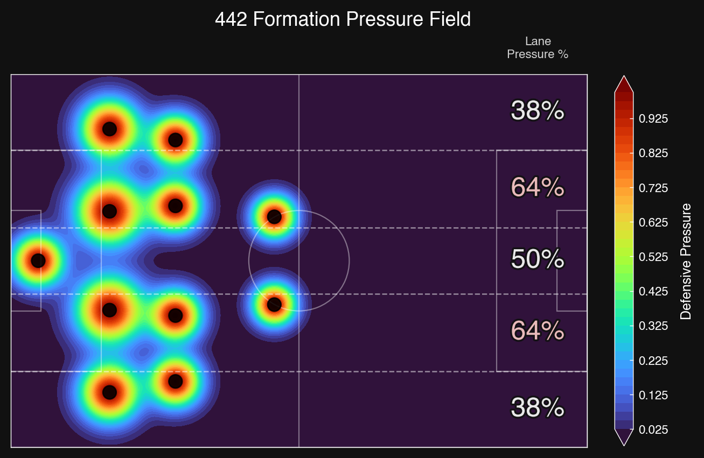
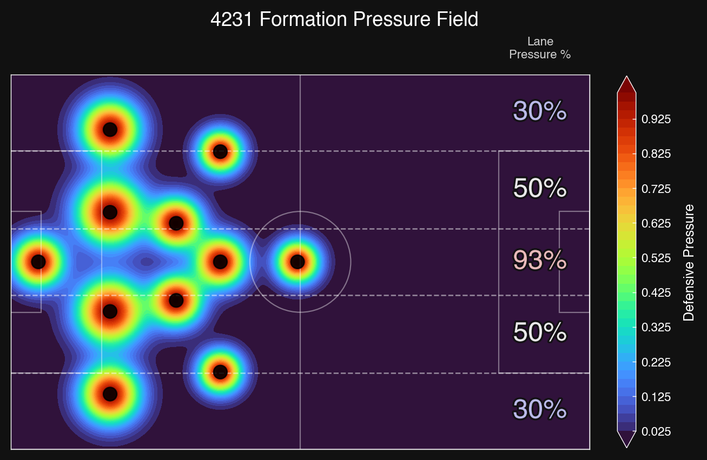
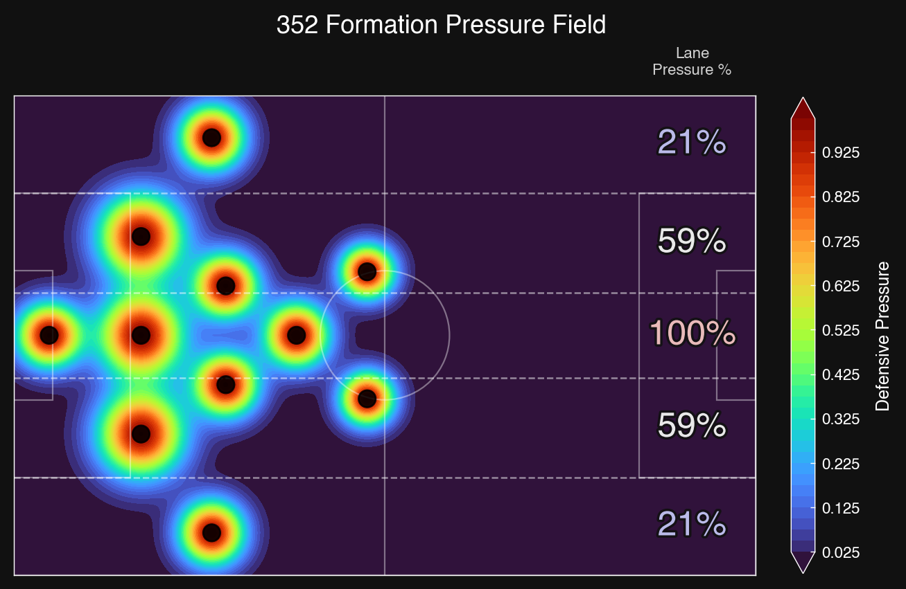

Tactical Positioning
Overview
Soccer is all about finding and manipulating open space. Modern soccer tactics splits the pitch into five lanes. This five-lane system, popularized by coaches like Pep Guardiola, acts as a spatial grid system. Each lane has distinct pressure characteristics based on the typical player roles and defensive responsibilities Every formation leaves gaps, and the five-lane system shows you exactly where they are. By modelling each player as an overlapping influence zone, we can build formation pressure maps that reveal open spaces and congested areas across the pitch. Elite coaches like Pep Guardiola attack through half-space pockets to create 3v2 overloads. Jürgen Klopp pins wide midfielders to the touchline, opening central channels for arriving runners. Mikel Arteta inverts his fullbacks into midfield to win numerical battles. Roberto De Zerbi uses a “free man” in the centre to attract pressure, then releases into open lanes. The five lanes below are the grid every coach reads from. Click or hover over any lane to see its role across every formation.
| Lane | Tactical role |
|---|---|
| Left Wing | Traditional touchline channel. Primary territory for wide midfielders and overlapping fullbacks. |
| Left Half-Space | The half-space: between the penalty box edge and the central channel. This is where creative playmakers operate, exploiting diagonal passing angles that split centre-backs and fullbacks. |
| Center | The central corridor. Highest density of players in most formations. Dominated by centre-backs, defensive midfielders, and the opposition striker. |
| Right Half-Space | Mirror of left half-space. Attacking midfielders drifting into this zone can create 3v2 overloads against the fullback-centre-back gap. |
| Right Wing | Mirror of left wing. Outlet for switches of play and isolation 1v1 situations. |
Formation Pressure Maps
Every formation creates a distinct defensive pressure field. Each defender is modelled as an influence zone whose strength drops off with distance (a Gaussian bell curve), the same superposition principle detailed in the theory section (equations 3–4). Combine all 11 players together and you get a map that shows where the defence is compact and where gaps exist. A centre-back controls a wide zone spanning the penalty area. A winger's influence is narrow and concentrated, reflecting their touchline role. The result is the same kind of overlay you would see in a heatmap of team shape, just built from first principles instead of location-tracking data.
Each lane's pressure is reported as a percentage of the highest lane average across all formations, giving a direct comparison of structural strengths. The colormap runs from dark blue (open) through yellow (moderate) to red (congested). Animated transitions show each formation morphing from attacking to defending, revealing how space closes as players drop back.

Watch the pattern: As formations add midfielders, the centre tightens and the flanks open. The 4-3-3 and 4-2-3-1 both show centre-heavy pressure. The 3-5-2 is the most extreme: five players packed in the central column, leaving the wings wide open. Below you can examine each formation lane by lane.
4-3-3

| Lane | Pressure | Strategy |
|---|---|---|
| Left Wing | 32% | Open. Switch play to the far side before the CDM shifts over. The wide areas are your escape valve. |
| Left Half-Space | 57% | Moderate. The LCM covers this zone. Quick 1-2s can bypass him before the CDM slides across. |
| Center | 81% | Congested. CDM + two CMs form a compact triangle. Avoid central combinations. |
| Right Half-Space | 57% | Moderate. The RCM drifts wide here. Transition through quickly before he locks on. |
| Right Wing | 32% | Open. Overlap the winger with the fullback for a 2v1 against the LB. Cross or cut back. |
4-4-2

| Lane | Pressure | Strategy |
|---|---|---|
| Left Wing | 38% | Open. LM pushes high leaving space behind. Hit diagonals in behind the fullback. |
| Left Half-Space | 68% | Compressed. LM and LCM pinch this zone. Through balls here are low percentage. |
| Center | 50% | Moderate. Only two CMs. Vertical passes between the striker and midfield are viable. |
| Right Half-Space | 68% | Compressed. The RM tracks back hard here. Quick switches to escape the squeeze. |
| Right Wing | 38% | Open. The RM's defensive duties leave the flank exposed. Overlap and cross early. |
4-2-3-1

| Lane | Pressure | Strategy |
|---|---|---|
| Left Wing | 32% | Very open. LW pushes high, LB isolated. Quick switches and overlapping runs punish the gap. |
| Left Half-Space | 51% | Moderate. The left CDM covers this zone but has ground to make up. Catch the pivot in transition. |
| Center | 93% | Extremely congested. Double pivot + CAM create a three-player wall. Do not play through the middle. |
| Right Half-Space | 51% | Moderate. The right CDM rotates wide here. Windows of vulnerability open during his shift. |
| Right Wing | 32% | Very open. The 4-2-3-1 gives up both flanks for central control. Attack wide relentlessly. |
3-5-2

| Lane | Pressure | Strategy |
|---|---|---|
| Left Wing | 21% | Very open. LWB pushes high leaving acres behind. Quick switches and overlapping runs find space. |
| Left Half-Space | 65% | Moderate. LWB and left CDM converge here. Catch the wing-back upfield before the CDM arrives. |
| Center | 100% | Extremely congested. Three CBs, two CDMs, and a CAM = five players in one column. A wall of bodies. |
| Right Half-Space | 65% | Moderate. The RWB's advanced start leaves windows in transition before the CDM can cover. |
| Right Wing | 21% | Very open. Wing-backs sacrifice defensive width for midfield numbers. Attack with pace down the flanks. |
Offence to Defence Transition
Let's observe how each formation transitions from its attacking shape (players spread, large gaps) to its defensive shape (compact, spaces closed). Watch how the pressure field changes: blue space areas shrink and fragment as players drop into defensive positions.